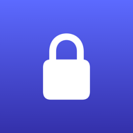

CachetteSupport
Frequently asked questions
I forgot my passcode.
On the lock screen, tap Forgot Passcode? and enter your recovery key. You'll then set a new passcode. Without the recovery key, nobody can open the vault, including us.
How do I move my vault to a new iPhone?
Move your data to the new iPhone with an iCloud or computer backup, or with Quick Start. Open Cachette on the new iPhone and enter your recovery key, then set a new passcode.
What does "Erase After 10 Failed Attempts" do?
If it's on, the whole vault is erased after 10 wrong passcodes on the lock screen. From the 5th attempt, each wrong guess adds a longer wait. Write down your recovery key before turning it on.
What's the difference between Free and Premium?
Free lets you keep up to 30 items. Premium removes the limit and includes every future security feature.
How do I cancel or restore my subscription?
To cancel, open the iPhone Settings app → your name → Subscriptions → Cachette. To restore a purchase on a new iPhone, open the Premium screen in Cachette and tap Restore Subscription.
지원
자주 묻는 질문
비밀번호를 잊어버렸어요.
잠금 화면에서 비밀번호를 잊었어요를 누르고 복구 키를 입력하세요. 그다음 새 비밀번호를 정하면 됩니다. 복구 키가 없으면 저희를 포함해 누구도 금고를 열 수 없습니다.
새 iPhone으로 금고를 옮기려면 어떻게 하나요?
iCloud나 컴퓨터 백업, 또는 '빠른 시작'으로 데이터를 새 iPhone에 옮기세요. 새 iPhone에서 Cachette를 열고 복구 키를 입력한 뒤 새 비밀번호를 정하면 됩니다.
계산기로 위장했을 때는 어떻게 여나요?
6자리 비밀번호를 누르고 =를 누르세요. Face ID나 복구 키를 쓰려면 숫자 칸을 길게 누르세요. 원래 잠금 화면이 나옵니다.
홈 화면 아이콘은 어떻게 바꾸나요?
설정 → 홈 화면 아이콘에서 고르세요. 아이콘이 바뀔 때 iOS가 알림을 한 번 띄웁니다. 아이콘 아래 앱 이름은 iOS 제한으로 바꿀 수 없습니다.
'10번 틀리면 모두 지우기'는 무엇인가요?
켜 두면 잠금 화면에서 비밀번호를 10번 틀렸을 때 금고 전체를 지웁니다. 5번째부터는 틀릴 때마다 기다리는 시간이 늘어납니다. 켜기 전에 복구 키를 꼭 적어 두세요.
무료와 프리미엄은 무엇이 다른가요?
무료로는 30개까지 보관할 수 있습니다. 프리미엄은 개수 제한이 없고 앞으로 추가되는 보안 기능도 모두 포함됩니다.
구독을 해지하거나 복원하려면요?
해지는 iPhone 설정 앱 → 내 이름 → 구독 → Cachette에서 할 수 있습니다. 새 iPhone에서 구매를 복원하려면 Cachette의 프리미엄 화면 아래쪽에 있는 복원 버튼을 누르세요.